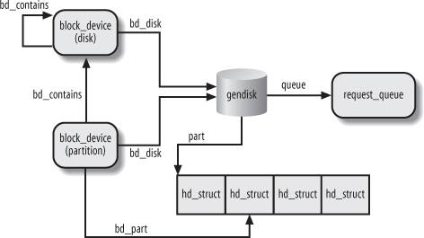

{% include JB/setup %}
{% raw %}
<div>


<a name="understandlk-CHP-14-SECT-4"></a>
<h3 class="docSection1Title" id="534871-815">14.4. Block Device Drivers</h3><a name="IDX-CHP-14-3705"></a>
<a name="IDX-CHP-14-3706"></a>
<p class="docText1">Block device drivers are the lowest component of the Linux block subsystem. They get requests from I/O scheduler, and do whatever is required to process them.</p>
<p class="docText1">Block device drivers are, of course, integrated within the device driver model described in the section "<a class="pcalibre5 docLink pcalibre1" href="understandlk-CHP-13-SECT-2.html#understandlk-CHP-13-SECT-2">The Device Driver Model</a>" in <a class="pcalibre5 docLink pcalibre1" href="understandlk-CHP-13.html#understandlk-CHP-13">Chapter 13</a>. Therefore, each of them refers to a <tt class="calibre25">device_driver</tt> descriptor; moreover, each disk handled by the driver is associated with a <tt class="calibre25">device</tt> descriptor. These descriptors, however, are rather generic: the block I/O subsystem must store additional information for each block device in the system.</p>
<a name="understandlk-CHP-14-SECT-4.1"></a>
<h4 class="docSection2Title">14.4.1. Block Devices</h4><a name="IDX-CHP-14-3707"></a>
<p class="docText1">A block device driver may handle several block devices. For instance, the IDE device driver can handle several IDE disks, each of which is a separate block device. Furthermore, each disk is usually partitioned, and each partition can be seen as a logical block device. Clearly, the block device driver must take care of all VFS system calls issued on the block device files associated with the corresponding block devices.</p>
<p class="docText1">Each block device is represented by a <tt class="calibre25">block_device</tt> descriptor, whose fields are listed in <a class="pcalibre5 docLink pcalibre1" href="#understandlk-CHP-14-TABLE-9">Table 14-9</a>.</p>
<a name="understandlk-CHP-14-TABLE-9"></a><p class="calibre14"><table cellspacing="0" frame="hsides" rules="all" cellpadding="4" width="100%" class="calibre15"><caption class="calibre33"><h5 class="docFigureTitle">Table 14-9. The fields of the block device descriptor</h5></caption><colgroup class="calibre16"><col class="calibre17"/><col class="calibre17"/><col class="calibre17"/></colgroup><thead class="calibre18"><tr class="calibre34"><th class="thead" scope="col"><p class="docText1"><span class="calibre5">Type</span></p></th><th class="thead" scope="col"><p class="docText1"><span class="calibre5">Field</span></p></th><th class="thead" scope="col"><p class="docText1"><span class="calibre5">Description</span></p></th></tr></thead><tr class="calibre2"><td class="docTableCell"><p class="docText2"><tt class="calibre25">dev_t</tt></p></td><td class="docTableCell"><p class="docText2"><tt class="calibre25">bd_dev</tt></p></td><td class="docTableCell"><p class="docText2">Major and minor numbers of the block device</p></td></tr><tr class="calibre2"><td class="docTableCell"><p class="docText2"><tt class="calibre25">struct inode *</tt></p></td><td class="docTableCell"><p class="docText2"><tt class="calibre25">bd_inode</tt></p></td><td class="docTableCell"><p class="docText2">Pointer to the inode of the file associated with the block device in the <span class="docEmphasis">bdev</span><a name="IDX-CHP-14-3708"></a> 
 filesystem</p></td></tr><tr class="calibre2"><td class="docTableCell"><p class="docText2"><tt class="calibre25">int</tt></p></td><td class="docTableCell"><p class="docText2"><tt class="calibre25">bd_openers</tt></p></td><td class="docTableCell"><p class="docText2">Counter of how many times the block device has been opened</p></td></tr><tr class="calibre2"><td class="docTableCell"><p class="docText2"><tt class="calibre25">struct semaphore</tt></p></td><td class="docTableCell"><p class="docText2"><tt class="calibre25">bd_sem</tt></p></td><td class="docTableCell"><p class="docText2">Semaphore protecting the opening and closing of the block device</p></td></tr><tr class="calibre2"><td class="docTableCell"><p class="docText2"><tt class="calibre25">struct semaphore</tt></p></td><td class="docTableCell"><p class="docText2"><tt class="calibre25">bd_mount_sem</tt></p></td><td class="docTableCell"><p class="docText2">Semaphore used to forbid new mounts on the block device</p></td></tr><tr class="calibre2"><td class="docTableCell"><p class="docText2"><tt class="calibre25">struct list_head</tt></p></td><td class="docTableCell"><p class="docText2"><tt class="calibre25">bd_inodes</tt></p></td><td class="docTableCell"><p class="docText2">Head of a list of inodes of opened block device files for this block device</p></td></tr><tr class="calibre2"><td class="docTableCell"><p class="docText2"><tt class="calibre25">void *</tt></p></td><td class="docTableCell"><p class="docText2"><tt class="calibre25">bd_holder</tt></p></td><td class="docTableCell"><p class="docText2">Current holder of block device descriptor</p></td></tr><tr class="calibre2"><td class="docTableCell"><p class="docText2"><tt class="calibre25">int</tt></p></td><td class="docTableCell"><p class="docText2"><tt class="calibre25">bd_holders</tt></p></td><td class="docTableCell"><p class="docText2">Counter for multiple settings of the <tt class="calibre25">bd_holder</tt> field</p></td></tr><tr class="calibre2"><td class="docTableCell"><p class="docText2"><tt class="calibre25">struct</tt></p><p class="docText2"><tt class="calibre25">block_device *</tt></p></td><td class="docTableCell"><p class="docText2"><tt class="calibre25">bd_contains</tt></p></td><td class="docTableCell"><p class="docText2">If block device is a partition, it points to the block device descriptor of the whole disk; otherwise, it points to this block device descriptor</p></td></tr><tr class="calibre2"><td class="docTableCell"><p class="docText2"><tt class="calibre25">unsigned</tt></p></td><td class="docTableCell"><p class="docText2"><tt class="calibre25">bd_block_size</tt></p></td><td class="docTableCell"><p class="docText2">Block size</p></td></tr><tr class="calibre2"><td class="docTableCell"><p class="docText2"><tt class="calibre25">struct hd_struct *</tt></p></td><td class="docTableCell"><p class="docText2"><tt class="calibre25">bd_part</tt></p></td><td class="docTableCell"><p class="docText2">Pointer to partition descriptor (<tt class="calibre25">NULL</tt> if this block device is not a partition)</p></td></tr><tr class="calibre2"><td class="docTableCell"><p class="docText2">unsigned</p></td><td class="docTableCell"><p class="docText2"><tt class="calibre25">bd_part_count</tt></p></td><td class="docTableCell"><p class="docText2">Counter of how many times partitions included in this block device have been opened</p></td></tr><tr class="calibre2"><td class="docTableCell"><p class="docText2">int</p></td><td class="docTableCell"><p class="docText2"><tt class="calibre25">bd_invalidated</tt></p></td><td class="docTableCell"><p class="docText2">Flag set when the partition table on this block device needs to be read</p></td></tr><tr class="calibre2"><td class="docTableCell"><p class="docText2">struct gendisk *</p></td><td class="docTableCell"><p class="docText2"><tt class="calibre25">bd_disk</tt></p></td><td class="docTableCell"><p class="docText2">Pointer to <tt class="calibre25">gendisk</tt> structure of the disk underlying this block device</p></td></tr><tr class="calibre2"><td class="docTableCell"><p class="docText2">struct list_head *</p></td><td class="docTableCell"><p class="docText2"><tt class="calibre25">bd_list</tt></p></td><td class="docTableCell"><p class="docText2">Pointers for the block device descriptor list</p></td></tr><tr class="calibre2"><td class="docTableCell"><p class="docText2">struct</p><p class="docText2">backing_dev_info *</p></td><td class="docTableCell"><p class="docText2"><tt class="calibre25">bd_inode_back</tt></p><p class="docText2"><tt class="calibre25">ing_dev_info</tt></p></td><td class="docTableCell"><p class="docText2">Pointer to a specialized <tt class="calibre25">backing_dev_info</tt> descriptor for this block device (usually <tt class="calibre25">NULL</tt>)</p></td></tr><tr class="calibre2"><td class="docTableCell"><p class="docText2">unsigned long</p></td><td class="docTableCell"><p class="docText2"><tt class="calibre25">bd_private</tt></p></td><td class="docTableCell"><p class="docText2">Pointer to private data of the block device holder</p></td></tr></table></p><br class="calibre7"/>
<p class="docText1">All block device descriptors are inserted in a global list, whose head is represented by the <tt class="calibre25">all_bdevs</tt> variable; the pointers for list linkage are in the <tt class="calibre25">bd_list</tt> field of the block device descriptor.</p>
<p class="docText1">If the block device descriptor refers to a disk partition, the <tt class="calibre25">bd_contains</tt> field points to the descriptor of the block device associated with the whole disk, while the <tt class="calibre25">bd_part</tt> field points to the <tt class="calibre25">hd_struct</tt> partition descriptor (see the section "<a class="pcalibre5 docLink pcalibre1" href="understandlk-CHP-14-SECT-2.html#understandlk-CHP-14-SECT-2.2">Representing Disks and Disk Partitions</a>" earlier in this chapter). Otherwise, if the block device descriptor refers to a whole disk, the <tt class="calibre25">bd_contains</tt> field points to the block device descriptor itself, and the <tt class="calibre25">bd_part_count</tt> field records how many times the partitions on the disk have been opened.</p>
<p class="docText1">The <tt class="calibre25">bd_holder</tt> field stores a linear address representing the <span class="docEmphasis">holder</span> of the block device. The holder is not the block device driver that services the I/O data transfers of the device; rather, it is a kernel component that makes use of the device and has exclusive, special privileges (for instance, it can freely use the <tt class="calibre25">bd_private</tt> field of the block device descriptor). Typically, the holder of a block device is the filesystem mounted over it. Another common case occurs when a block device file is opened for exclusive access: the holder is the corresponding file object.</p>
<p class="docText1">The <tt class="calibre25">bd_claim( )</tt> function sets the <tt class="calibre25">bd_holder</tt> field with a specified address; conversely, the <tt class="calibre25">bd_release( )</tt> function resets the field to <tt class="calibre25">NULL</tt>. Be aware, however, that the same kernel component can invoke <tt class="calibre25">bd_claim( )</tt> many times; each invocation increases the <tt class="calibre25">bd_holders</tt> field. To release the block device, the kernel component must invoke <tt class="calibre25">bd_release( )</tt> a corresponding number of times.</p>
<p class="docText1"><a class="pcalibre5 docLink pcalibre1" href="#understandlk-CHP-14-FIG-3">Figure 14-3</a> refers to a whole disk and illustrates how the block device descriptors are linked to the other main data structures of the block I/O subsystem.</p>
<a name="understandlk-CHP-14-FIG-3"></a><p class="calibre14"><center class="calibre8">
<h5 class="docFigureTitle">Figure 14-3. Linking the block device descriptors with the other structures of the block subsystem</h5>
</center></p><br class="calibre7"/>
<a name="understandlk-CHP-14-SECT-4.1.1"></a>
<h5 class="docSection3Title">14.4.1.1. Accessing a block device</h5>
<p class="docText1">When the kernel receives a request for opening a block device file, it must first determine whether the device file is already open. In fact, if the file is already open, the kernel must not create and initialize a new block device descriptor; rather, it should update the already existing block device descriptor. To complicate life, block device files that have the same major and minor numbers but different pathnames are viewed by the VFS as different files, although they really refer to the same block device. Therefore, the kernel cannot determine whether a block device is already in use by simply checking for the existence in the inode cache<a name="IDX-CHP-14-3709"></a> 
 of an object for a block device file.</p>
<p class="docText1">The relationship between a major and minor number and the corresponding block device descriptor is maintained through the <span class="docEmphasis">bdev</span><a name="IDX-CHP-14-3710"></a> 
 special filesystem (see the section "<a class="pcalibre5 docLink pcalibre1" href="understandlk-CHP-12-SECT-3.html#understandlk-CHP-12-SECT-3.1">Special Filesystems</a>" in <a class="pcalibre5 docLink pcalibre1" href="understandlk-CHP-12.html#understandlk-CHP-12">Chapter 12</a>). Each block device descriptor is coupled with a <span class="docEmphasis">bdev</span> special file: the <tt class="calibre25">bd_inode</tt> field of the block device descriptor points to the corresponding <span class="docEmphasis">bdev</span> inode; conversely, such an inode encodes both the major and minor numbers of the block device and the address of the corresponding descriptor.</p>
<p class="docText1">The <tt class="calibre25">bdget( )</tt> function receives as its parameter the major and minor numbers of a block device: It looks up in the <span class="docEmphasis">bdev</span> filesystem the associated inode; if such inode does not exist, the function allocates a new inode and new block device descriptor. In any case, the function returns the address of the block device descriptor corresponding to given major and minor numbers.</p>
<p class="docText1">Once the block device descriptor for a block device has been found, the kernel can determine whether the block device is currently in use by checking the value of the <tt class="calibre25">bd_openers</tt> field: if it is positive, the block device is already in use (possibly by means of a different device file). The kernel also maintains a list of inode objects relative to opened block device files. This list is rooted at the <tt class="calibre25">bd_inodes</tt> field of the block device descriptor; the <tt class="calibre25">i_devices</tt> field of the inode object stores the pointers for the previous and next element in this list.</p>
<a name="understandlk-CHP-14-SECT-4.2"></a>
<h4 class="docSection2Title">14.4.2. Device Driver Registration and Initialization</h4><a name="IDX-CHP-14-3711"></a>
<p class="docText1">Let's now explain the essential steps involved in setting up a new device driver for a block device. Clearly, the description that follows is very succinct, nevertheless it could be useful to understand how and when the main data structures used by the block I/O subsystem are initialized.</p>
<p class="docText1">We silently omit many steps required for all kinds of device drivers and already mentioned in <a class="pcalibre5 docLink pcalibre1" href="understandlk-CHP-13.html#understandlk-CHP-13">Chapter 13</a>. For example, we skip all steps required for registering the driver itself (see the section "<a class="pcalibre5 docLink pcalibre1" href="understandlk-CHP-13-SECT-2.html#understandlk-CHP-13-SECT-2">The Device Driver Model</a>" in <a class="pcalibre5 docLink pcalibre1" href="understandlk-CHP-13.html#understandlk-CHP-13">Chapter 13</a>). Usually, the block device belongs to a standard bus architecture such as PCI or SCSI, and the kernel offers helper functions that, as a side effect, register the driver in the device driver model.</p>
<a name="understandlk-CHP-14-SECT-4.2.1"></a>
<h5 class="docSection3Title">14.4.2.1. Defining a custom driver descriptor</h5>
<p class="docText1">First of all, the device driver needs a custom descriptor <tt class="calibre25"><i class="docEmphasis">foo</i></tt> of type <tt class="calibre25"><i class="docEmphasis">foo</i></tt><tt class="calibre25">_dev_t</tt> holding the data required to drive the hardware device. For every device, the descriptor will store information such as the I/O ports used to program the device, the IRQ line of the interrupts raised by the device, the internal status of the device, and so on. The descriptor must also include a few fields required by the block I/O subsystem:</p>
<pre class="calibre27">
struct <tt class="calibre25"><i class="docEmphasis">foo</i></tt>_dev_t {
    [...]
    spinlock_t lock;
    struct gendisk *gd;
    [...]
} <tt class="calibre25"><i class="docEmphasis">foo;</i></tt></pre><br class="calibre7"/>
<p class="docText1">The <tt class="calibre25">lock</tt> field is a spin lock used to protect the fields of the <tt class="calibre25"><i class="docEmphasis">foo</i></tt> descriptor; its address is often passed to kernel helper functions, which can thus protect the data structures of the block I/O subsystem specific to the driver. The <tt class="calibre25">gd</tt> field is a pointer to the <tt class="calibre25">gendisk</tt> descriptor that represents the whole block device (disk) handled by this driver.</p>
<p class="docText1">Reserving the major number</p>
<p class="docText1">The device driver must reserve a major number for its own purposes. Traditionally, this is done by invoking the <tt class="calibre25">register_blkdev( )</tt> function:</p>
<pre class="calibre27">
err = register_blkdev(<span class="docEmphasis">FOO</span>_MAJOR, "<tt class="calibre25"><i class="docEmphasis">foo</i></tt>");
if (err) goto error_major_is_busy;</pre><br class="calibre7"/>
<p class="docText1">This function is very similar to <tt class="calibre25">register_chrdev( )</tt> presented in the section "<a class="pcalibre5 docLink pcalibre1" href="understandlk-CHP-13-SECT-5.html#understandlk-CHP-13-SECT-5.1">Assigning Device Numbers</a>" in <a class="pcalibre5 docLink pcalibre1" href="understandlk-CHP-13.html#understandlk-CHP-13">Chapter 13</a>: it reserves the major number <tt class="calibre25"><i class="docEmphasis">FOO</i></tt><tt class="calibre25">_MAJOR</tt> and associates the name <i class="docEmphasis">foo</i> to it. Notice that there is no way to allocate a subrange of minor numbers, because there is no analog of <tt class="calibre25">register_chrdev_region( )</tt>; moreover, no link is established between the reserved major number and the data structures of the driver. The only visible effect of <tt class="calibre25">register_blkdev( )</tt> is to include a new item in the list of registered major numbers in the <i class="docEmphasis">/proc/devices</i> special file.</p>
<a name="understandlk-CHP-14-SECT-4.2.2"></a>
<h5 class="docSection3Title">14.4.2.2. Initializing the custom descriptor</h5><a name="IDX-CHP-14-3712"></a>
<p class="docText1">All the fields of the <tt class="calibre25"><i class="docEmphasis">foo</i></tt> descriptor must be initialized properly before making use of the driver. To initialize the fields related to the block I/O subsystem, the device driver could execute the following instructions:</p>
<pre class="calibre27">
spin_lock_init(&amp;<span class="docEmphasis">foo</span>.lock);
<span class="docEmphasis">foo</span>.gd = alloc_disk(16);
if (!<span class="docEmphasis">foo</span>.gd) goto error_no_gendisk;</pre><br class="calibre7"/>
<p class="docText1">The driver initializes the spin lock, then allocates the disk descriptor. As shown earlier in <a class="pcalibre5 docLink pcalibre1" href="#understandlk-CHP-14-FIG-3">Figure 14-3</a>, the <tt class="calibre25">gendisk</tt> structure is crucial for the block I/O subsystem, because it references many other data structures. The <tt class="calibre25">alloc_disk( )</tt> function allocates also the array that stores the partition descriptors of the disk. The argument of the function is the number of <tt class="calibre25">hd_struct</tt> elements in the array; the value 16 means that the driver can support disks containing up to 15 partitions (partition 0 is not used).</p>
<a name="understandlk-CHP-14-SECT-4.2.3"></a>
<h5 class="docSection3Title">14.4.2.3. Initializing the gendisk descriptor</h5><a name="IDX-CHP-14-3713"></a>
<p class="docText1">Next, the driver initializes some fields of the <tt class="calibre25">gendisk</tt> descriptor:</p>
<pre class="calibre27">
<tt class="calibre25"><i class="docEmphasis">foo</i></tt>.gd-&gt;private_data = &amp;<tt class="calibre25"><i class="docEmphasis">foo</i></tt>;
<tt class="calibre25"><i class="docEmphasis">foo</i></tt>.gd-&gt;major = <tt class="calibre25"><i class="docEmphasis">FOO</i></tt>_MAJOR;
<tt class="calibre25"><i class="docEmphasis">foo</i></tt>.gd-&gt;first_minor = 0;
<tt class="calibre25"><i class="docEmphasis">foo</i></tt>.gd-&gt;minors = 16;
set_capacity(<tt class="calibre25"><i class="docEmphasis">foo</i></tt>.gd, <tt class="calibre25"><i class="docEmphasis">foo</i></tt>_disk_capacity_in_sectors);
strcpy(<tt class="calibre25"><i class="docEmphasis">foo</i></tt>.gd-&gt;disk_name, "<tt class="calibre25"><i class="docEmphasis">foo</i></tt>");
<tt class="calibre25"><i class="docEmphasis">foo</i></tt>.gd-&gt;fops = &amp;<tt class="calibre25"><i class="docEmphasis">foo</i></tt>_ops;</pre><br class="calibre7"/>
<p class="docText1">The address of the <tt class="calibre25"><i class="docEmphasis">foo</i></tt> descriptor is saved in the <tt class="calibre25">private_data</tt> of the <tt class="calibre25">gendisk</tt> structure, so that low-level driver functions invoked as methods by the block I/O subsystem can quickly find the driver descriptorthis improves efficiency if the driver can handle more than one disk at a time. The <tt class="calibre25">set_capacity( )</tt> function initializes the <tt class="calibre25">capacity</tt> field with the size of the disk in 512-byte sectorsthis value is likely determined by probing the hardware and asking about the disk parameters.</p>
<a name="understandlk-CHP-14-SECT-4.2.4"></a>
<h5 class="docSection3Title">14.4.2.4. Initializing the table of block device methods</h5>
<p class="docText1">The <tt class="calibre25">fops</tt> field of the <tt class="calibre25">gendisk</tt> descriptor is initialized with the address of a custom table of block device methods (see <a class="pcalibre5 docLink pcalibre1" href="understandlk-CHP-14-SECT-2.html#understandlk-CHP-14-TABLE-4">Table 14-4</a> earlier in this chapter).<sup class="docFootnote"><a class="pcalibre5 docLink pcalibre1" href="#understandlk-CHP-14-FN3">[*]</a></sup> Quite likely, the <tt class="calibre25"><i class="docEmphasis">foo</i></tt><tt class="calibre25">_ops</tt> table of the device driver includes functions specific to the device driver. As an example, if the hardware device supports removable disks, the generic block layer may invoke the <tt class="calibre25">media_changed</tt> method to check whether the disk is changed since the last mount or open operation on the block device. This check is usually done by sending some low-level commands to the hardware controller, thus the implementation of the <tt class="calibre25">media_changed</tt> method is always specific to the device driver.</p><blockquote class="calibre22"><p class="docFootnote1"><sup class="calibre24"><a name="understandlk-CHP-14-FN3">[*]</a></sup> The block device methods should not be confused with the block device file operations; see the section "<a class="pcalibre5 docLink pcalibre1" href="understandlk-CHP-14-SECT-5.html#understandlk-CHP-14-SECT-5">Opening a Block Device File</a>" later in this chapter.</p></blockquote>
<p class="docText1">Similarly, the <tt class="calibre25">ioctl</tt> method is only invoked when the generic block layer does not know how to handle some <i class="docEmphasis">ioctl</i> command. For instance, the method is typically invoked when an <tt class="calibre25">ioctl( )</tt><a name="IDX-CHP-14-3714"></a> 
 system call asks about the <span class="docEmphasis">disk geometry</span><a name="IDX-CHP-14-3715"></a> 
, that is, the number of cylinders, tracks, sectors, and heads used by the disk. Thus, the implementation of this method is specific to the device driver.</p>
<a name="understandlk-CHP-14-SECT-4.2.5"></a>
<h5 class="docSection3Title">14.4.2.5. Allocating and initializing a request queue</h5>
<p class="docText1">Our brave device driver designer might now set up a request queue that will collect the requests waiting to be serviced. This can be easily done as follows:</p>
<pre class="calibre27">
<tt class="calibre25"><i class="docEmphasis">foo</i></tt>.gd-&gt;rq = blk_init_queue(<tt class="calibre25"><i class="docEmphasis">foo</i></tt>_strategy, &amp;<tt class="calibre25"><i class="docEmphasis">foo</i></tt>.lock);
if (!<tt class="calibre25"><i class="docEmphasis">foo</i></tt>.gd-&gt;rq) goto error_no_request_queue;
blk_queue_hardsect_size(<tt class="calibre25"><i class="docEmphasis">foo</i></tt>.gd-&gt;rd, foo_hard_sector_size);
blk_queue_max_sectors(<tt class="calibre25"><i class="docEmphasis">foo</i></tt>.gd-&gt;rd, <tt class="calibre25"><i class="docEmphasis">foo</i></tt>_max_sectors);
blk_queue_max_hw_segments(<tt class="calibre25"><i class="docEmphasis">foo</i></tt>.gd-&gt;rd, <tt class="calibre25"><i class="docEmphasis">foo</i></tt>_max_hw_segments);
blk_queue_max_phys_segments(<tt class="calibre25"><i class="docEmphasis">foo</i></tt>.gd-&gt;rd, <tt class="calibre25"><i class="docEmphasis">foo</i></tt>_max_phys_segments);</pre><br class="calibre7"/>
<p class="docText1">The <tt class="calibre25">blk_init_queue( )</tt> function allocates a request queue descriptor and initializes many of its fields with default values. It receives as its parameters the address of the device descriptor's spin lockfor the <tt class="calibre25"><i class="docEmphasis">foo</i></tt><tt class="calibre25">.gd-&gt;rq-&gt;queue_lock</tt> fieldand the address of the strategy routine of the device driverfor the <tt class="calibre25"><i class="docEmphasis">foo</i></tt><tt class="calibre25">.gd-&gt;rq-&gt;request_fn</tt> field; see the next section; "<a class="pcalibre5 docLink pcalibre1" href="#understandlk-CHP-14-SECT-4.3">The Strategy Routine</a>." The <tt class="calibre25">blk_init_queue( )</tt> function also initializes the <tt class="calibre25"><i class="docEmphasis">foo</i></tt><tt class="calibre25">.gd-&gt;rq-&gt;elevator</tt> field, forcing the driver to use the default I/O scheduler algorithm. If the device driver wants to use a different elevator, it may later override the address in the <tt class="calibre25">elevator</tt> field.</p>
<p class="docText1">Next, some helper functions set various fields of the request queue descriptor with the proper values for the device driver (look at <a class="pcalibre5 docLink pcalibre1" href="understandlk-CHP-14-SECT-3.html#understandlk-CHP-14-TABLE-6">Table 14-6</a> for the similarly named fields).</p>
<a name="understandlk-CHP-14-SECT-4.2.6"></a>
<h5 class="docSection3Title">14.4.2.6. Setting up the interrupt handler</h5><a name="IDX-CHP-14-3716"></a>
<a name="IDX-CHP-14-3717"></a>
<a name="IDX-CHP-14-3718"></a>
<a name="IDX-CHP-14-3719"></a>
<a name="IDX-CHP-14-3720"></a>
<a name="IDX-CHP-14-3721"></a>
<a name="IDX-CHP-14-3722"></a>
<p class="docText1">As described in the section "<a class="pcalibre5 docLink pcalibre1" href="understandlk-CHP-4-SECT-6.html#understandlk-CHP-4-SECT-6.1">I/O Interrupt Handling</a>" in <a class="pcalibre5 docLink pcalibre1" href="understandlk-CHP-4.html#understandlk-CHP-4">Chapter 4</a>, the driver needs to register the IRQ line for the device. This can be done as follows:</p>
<pre class="calibre27">
request_irq(<tt class="calibre25"><i class="docEmphasis">foo</i></tt>_irq, <tt class="calibre25"><i class="docEmphasis">foo</i></tt>_interrupt,
            SA_INTERRUPT|SA_SHIRQ, "<tt class="calibre25"><i class="docEmphasis">foo</i></tt>", NULL);</pre><br class="calibre7"/>
<p class="docText1">The <tt class="calibre25"><i class="docEmphasis">foo</i></tt><tt class="calibre25">_interrupt()</tt> function is the interrupt handler for the device; we discuss some of its peculiarities in the section "<a class="pcalibre5 docLink pcalibre1" href="#understandlk-CHP-14-SECT-4.4">The Interrupt Handler</a>" later in this chapter).</p>
<a name="understandlk-CHP-14-SECT-4.2.7"></a>
<h5 class="docSection3Title">14.4.2.7. Registering the disk</h5>
<p class="docText1">Finally, all the device driver's data structures are ready: the last step of the initialization phase consists of "registering" and activating the disk. This can be achieved simply by executing:</p>
<pre class="calibre27">
add_disk(<tt class="calibre25"><i class="docEmphasis">foo</i></tt>.gd);</pre><br class="calibre7"/>
<p class="docText1">The <tt class="calibre25">add_disk( )</tt> function receives as its parameter the address of the <tt class="calibre25">gendisk</tt> descriptor, and essentially executes the following operations:</p>
<div class="calibre44"><ol class="docList1" type="1"><li class="calibre12"><div class="calibre45"><p class="docList">Sets the <tt class="calibre25">GENHD_FL_UP</tt> flag of <tt class="calibre25">gd-&gt;flags</tt>.</p></div></li><li class="calibre12"><div class="calibre45"><p class="docList">Invokes <tt class="calibre25">kobj_map()</tt> to establish the link between the device driver and the device's major number with its associated range of minor numbers (see the section "<a class="pcalibre5 docLink pcalibre1" href="understandlk-CHP-13-SECT-5.html#understandlk-CHP-13-SECT-5">Character Device Drivers</a>" in <a class="pcalibre5 docLink pcalibre1" href="understandlk-CHP-13.html#understandlk-CHP-13">Chapter 13</a>; be warned that in this case the kobject mapping domain<a name="IDX-CHP-14-3723"></a> 
 is represented by the <tt class="calibre25">bdev_map</tt> variable).</p></div></li><li class="calibre12"><div class="calibre45"><p class="docList">Registers the kobject included in the <tt class="calibre25">gendisk</tt> descriptor in the device driver model as a new device serviced by the device driver (e.g., <i class="docEmphasis">/sys/block/foo</i>).</p></div></li><li class="calibre12"><div class="calibre45"><p class="docList">Scans the partition table included in the disk, if any; for each partition found, properly initializes the corresponding <tt class="calibre25">hd_struct</tt> descriptor in the <tt class="calibre25"><i class="docEmphasis">foo</i></tt><tt class="calibre25">.gd-&gt;part</tt> array. Also registers the partitions in the device driver model (e.g., <i class="docEmphasis">/sys/block/foo/foo1</i>).</p></div></li><li class="calibre12"><div class="calibre45"><p class="docList">Registers the kobject embedded in the request queue descriptor in the device driver model (e.g., <i class="docEmphasis">/sys/block/foo/queue</i>).</p></div></li></ol></div>
<p class="docText1">Once <tt class="calibre25">add_disk( )</tt> returns, the device driver is actively working. The function that carried on the initialization phase terminates; the strategy routine and the interrupt handler take care of each request passed to the device driver by the I/O scheduler.</p>
<a name="understandlk-CHP-14-SECT-4.3"></a>
<h4 class="docSection2Title">14.4.3. The Strategy Routine</h4><a name="IDX-CHP-14-3724"></a>
<a name="IDX-CHP-14-3725"></a>
<a name="IDX-CHP-14-3726"></a>
<a name="IDX-CHP-14-3727"></a>
<a name="IDX-CHP-14-3728"></a>
<a name="IDX-CHP-14-3729"></a>
<p class="docText1">The strategy routine is a functionor a group of functionsof the block device driver that interacts with the hardware block device to satisfy the requests collected in the dispatch queue. The strategy routine is invoked by means of the <tt class="calibre25">request_fn</tt> method of the request queue descriptorthe <tt class="calibre25"><i class="docEmphasis">foo</i></tt><tt class="calibre25">_strategy( )</tt> function in the example carried on in the previous section. The I/O scheduler layer passes to this function the address <tt class="calibre25">q</tt> of the request queue descriptor.</p>
<p class="docText1">As we'll see, the strategy routine is usually started after inserting a new request in an empty request queue. Once activated, the block device driver should handle all requests in the queue and terminate when the queue is empty.</p>
<p class="docText1">A naïve implementation of the strategy routine could be the following: for each element in the dispatch queue, remove it from the queue, interact with the block device controller to service the request, and wait until the data transfer completes. Then proceed with the next request in the dispatch queue.</p>
<p class="docText1">Such an implementation is not very efficient. Even assuming that the data can be transferred using DMA, the strategy routine must suspend itself while waiting for I/O completion. This means that the strategy routine should execute on a dedicated kernel thread (we don't want to penalize an unrelated user process, do we?). Moreover, such a driver would not be able to support modern disk controllers that can process multiple I/O data transfers at a time.</p>
<p class="docText1">Therefore, most block device drivers adopt the following strategy:</p>
<ul class="calibre11"><li class="calibre12"><p class="docText1">The strategy routine starts a data transfer for the first request in the queue and sets up the block device controller so that it raises an interrupt when the data transfer completes. Then the strategy routine terminates.</p></li><li class="calibre12"><p class="docText1">When the disk controller raises the interrupt, the interrupt handler invokes the strategy routine again (often directly, sometimes by activating a work queue). The strategy routine either starts another data transfer for the current request or, if all the chunks of data of the request have been transferred, removes the request from the dispatch queue and starts processing the next request.</p></li></ul>
<p class="docText1">Requests can be composed of several bios, which in turn can be composed of several segments. Basically, block device drivers make use of DMA in two ways:</p>
<ul class="calibre11"><li class="calibre12"><p class="docText1">The driver sets up a different DMA transfer to service each segment in each bio of the request</p></li><li class="calibre12"><p class="docText1">The driver sets up a single scatter-gather DMA transfer to service all segments in all bios of the request</p></li></ul>
<p class="docText1">Ultimately, the design of the strategy routine of the device drivers depends on the characteristics of the block controller. Each physical block device is inherently different from all others (for example, a floppy driver groups blocks in disk tracks and transfers a whole track in a single I/O operation), so making general assumptions on how a device driver should service a request is meaningless.</p>
<p class="docText1">In our example, the <tt class="calibre25"><i class="docEmphasis">foo</i></tt><tt class="calibre25">_strategy( )</tt> strategy routine could execute the following actions:</p>
<div class="calibre44"><ol class="docList1" type="1"><li class="calibre12"><div class="calibre45"><p class="docList">Gets the current request from the dispatch queue by invoking the <tt class="calibre25">elv_next_request( )</tt> I/O scheduler helper function. If the dispatch queue is empty, the strategy routine returns:</p><pre class="calibre60">
req = elv_next_request(q);
if (!req) return;</pre><br class="calibre7"/>
</div></li><li class="calibre12"><div class="calibre45"><p class="docList">Executes the <tt class="calibre25">blk_fs_request</tt> macro to check whether the <tt class="calibre25">REQ_CMD</tt> flag of the request is set, that is, whether the request contains a normal read or write operation:</p><pre class="calibre60">
if (!blk_fs_request(req))
    goto handle_special_request;</pre><br class="calibre7"/>
</div></li><li class="calibre12"><div class="calibre45"><p class="docList">If the block device controller supports scatter-gather DMA, it programs the disk controller so as to perform the data transfer for the whole request and to raise an interrupt when the transfer completes. The <tt class="calibre25">blk_rq_map_sg( )</tt> helper function returns a scatter-gather list that can be immediately used to start the transfer.</p></div></li><li class="calibre12"><div class="calibre45"><p class="docList">Otherwise, the device driver must transfer the data segment by segment. In this case, the strategy routine executes the <tt class="calibre25">rq_for_each_bio</tt> and <tt class="calibre25">bio_for_each_segment</tt> macros, which walk the list of bios and the list of segments inside each bio, respectively:</p><pre class="calibre60">
rq_for_each_bio(bio, rq)
    bio_for_each_segment(bvec, bio, i) {
        /* transfer the i-th segment bvec */
        local_irq_save(flags);
        addr = kmap_atomic(bvec-&gt;bv_page, KM_BIO_SRC_IRQ);
        <tt class="calibre25"><i class="docEmphasis">foo</i></tt>_start_dma_transfer(addr+bvec-&gt;bv_offset, bvec-&gt;bv_len);
        kunmap_atomic(bvec-&gt;bv_page, KM_BIO_SRC_IRQ);
        local_irq_restore(flags);
    }</pre><br class="calibre7"/>
<p class="docList">The <tt class="calibre25">kmap_atomic( )</tt> and <tt class="calibre25">kunmap_atomic( )</tt> functions are required if the data to be transferred can be in high memory. The <tt class="calibre25"><i class="docEmphasis">foo</i></tt><tt class="calibre25">_start_dma_transfer( )</tt> function programs the hardware device so as to start the DMA transfer and to raise an interrupt when the I/O operation completes.</p></div></li><li class="calibre12"><div class="calibre45"><p class="docList">Returns.</p></div></li></ol></div>
<a name="understandlk-CHP-14-SECT-4.4"></a>
<h4 class="docSection2Title">14.4.4. The Interrupt Handler</h4><a name="IDX-CHP-14-3730"></a>
<a name="IDX-CHP-14-3731"></a>
<p class="docText1">The interrupt handler of a block device driver is activated when a DMA transfer terminates. It should check whether all chunks of data in the request have been transferred. If so, the interrupt handler invokes the strategy routine to process the next request in the dispatch queue. Otherwise, the interrupt handler updates the field of the request descriptor and invokes the strategy routine to process the data transfer yet to be performed.</p>
<p class="docText1">A typical fragment of the interrupt handler of our <tt class="calibre25"><i class="docEmphasis">foo</i></tt> device driver is the following:</p>
<pre class="calibre27">
irqreturn_t foo_interrupt(int irq, void *dev_id, struct pt_regs *regs)
{
    struct <tt class="calibre25"><i class="docEmphasis">foo</i></tt>_dev_t *p = (struct <tt class="calibre25"><i class="docEmphasis">foo</i></tt>_dev_t *) dev_id;
    struct request_queue *rq = p-&gt;gd-&gt;rq;
       [...]
    if (!end_that_request_first(rq, uptodate, nr_sectors)) {
        blkdev_dequeue_request(rq);
        end_that_request_last(rq);
    }
    rq-&gt;request_fn(rq);
       [...]
    return IRQ_HANDLED;
}</pre><br class="calibre7"/>
<p class="docText1">The job of ending a request is split in two functions called <tt class="calibre25">end_that_request_first( )</tt> and <tt class="calibre25">end_that_request_last( )</tt>.</p>
<p class="docText1">The <tt class="calibre25">end_that_request_first( )</tt> function receives as arguments a request descriptor, a flag indicating if the DMA data transfer completed successfully, and the number of sectors transferred in the DMA transfer (the <tt class="calibre25">end_that_request_chunk( )</tt> function is similar, but it receives the number of bytes transferred instead of the number of sectors). Essentially, the function scans the bios in the request and the segments inside each bio, then updates the fields of the request descriptor in such a way to:</p>
<ul class="calibre11"><li class="calibre12"><p class="docText1">Set the <tt class="calibre25">bio</tt> field so that it points to the first unfinished bio in the request.</p></li><li class="calibre12"><p class="docText1">Set the <tt class="calibre25">bi_idx</tt> of the unfinished bio so that it points to the first unfinished segment.</p></li><li class="calibre12"><p class="docText1">Set the <tt class="calibre25">bv_offset</tt> and <tt class="calibre25">bv_len</tt> fields of the unfinished segment so that they specify the data yet to be transferred.</p></li></ul>
<p class="docText1">The function also invokes <tt class="calibre25">bio_endio( )</tt> on each bio that has been completely transferred.</p>
<p class="docText1">The <tt class="calibre25">end_that_request_first( )</tt> function returns 0 if all chunks of data in the request have been transferred; otherwise, it returns 1. If the returned value is 1, the interrupt handler restarts the strategy routine, which thus continues processing the same request. Otherwise, the interrupt handler removes the request from the request queue (typically by using <tt class="calibre25">blkdev_dequeue_request( )</tt>), invokes the <tt class="calibre25">end_that_request_last( )</tt> helper function, and restarts the strategy routine to process the next request in the dispatch queue.</p>
<p class="docText1">The <tt class="calibre25">end_that_request_last( )</tt> function updates some disk usage statistics, removes the request descriptor from the dispatch queue of the <tt class="calibre25">rq-&gt;elevator</tt> I/O scheduler, wakes up any process sleeping in the <tt class="calibre25">waiting</tt> completion of the request descriptor, and releases that descriptor.</p>

<br class="calibre7"/>

</div>

{% endraw %}

